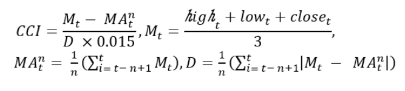

이전글 2.2. 주가 데이터 스케일링 에서는 통합 종목 주가 데이터셋의 문제점인 종목마다 다른 가격을 표준화해주는 작업을 했습니다. 마지막 데이터 전처리 과정은 CCI를 이용한 주가 데이터 필터링입니다. 매일 쏟아져 나오는 방대한 주가 데이터셋으로부터 특정 패턴을 검출해내는 것은 어려운 과제입니다. 본 연구에서는 그러한 문제점을 최소화하고자, CCI 구간별로 데이터를 필터링 하는 방법을 사용합니다. 이번 글에서는 CCI가 무엇인지 알아보고, CCI를 3가지 구간으로 나누어 필터링 한 데이터로 XGBoost 모델학습을 진행합니다.
목차
CCI란?
CCI를 활용한 주가데이터 필터링
import pandas as pdimport numpy as npfrom tqdm import tqdmimport pymysqlimport warningswarnings.filterwarnings('ignore')import tafrom ipywidgets import interact, interact_manualimport matplotlib.pyplot as pltimport seaborn as snsimport plotly.graph_objects as goimport plotly.offline as pyo%matplotlib inline%pylab inlinepylab.rcParams['figure.figsize'] = (12,5)import StockFunc as sf
%pylab is deprecated, use %matplotlib inline and import the required libraries.
Populating the interactive namespace from numpy and matplotlib
(1) CCI란?
CCI (상품 채널 지수: Commodity Chnnel Index) 는 일정 기간 동안 주가의 평균값에서 얼마나 떨어졌는지를 보여주는 추세 지표이며, 추세의 방향과 강도를 알 수 있습니다. 추세의 강도만을 알려주는 ADX에 비해 추세의 방향까지 동시에 알려주기 때문에 추세 추종형 거래자들에게 유용한 지표로 사용되고 있고, 추세지표지만 변동성 지표처럼 사용되기도 합니다.
계산식

해석 방법
CCI 값이 0이면 현재 주가가 이동 평균선과 일치한다는 뜻
CCI 값이 +이면 상승추세, -이면 하락추세이다.
CCI 값이 클수록 추세의 강도가 강하고, 작을수록 추세의 강도가 약하다.
CCI의 절댓값이 100 이상으로 크다는 것은 가격이 급변하였다는 것을 의미한다. (과매수/과매도 구간)